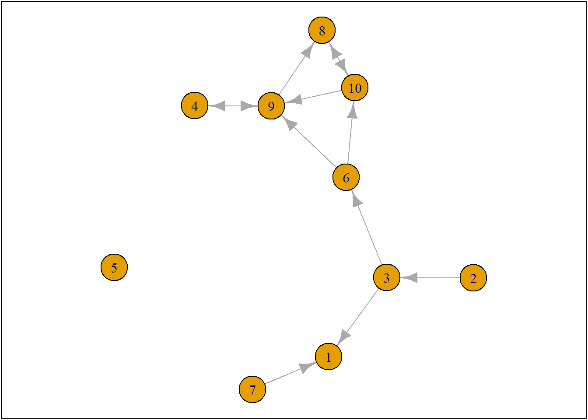
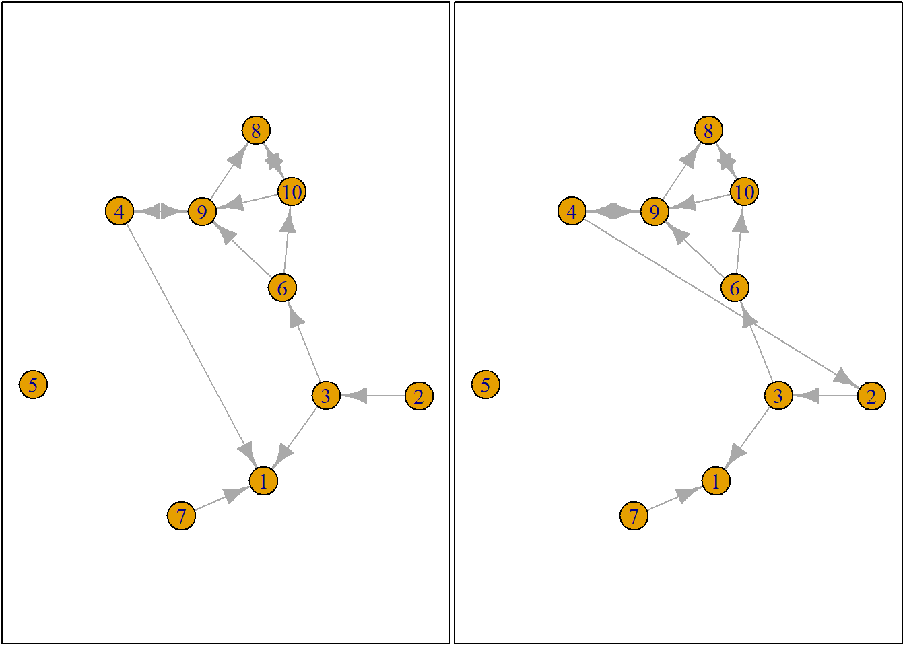
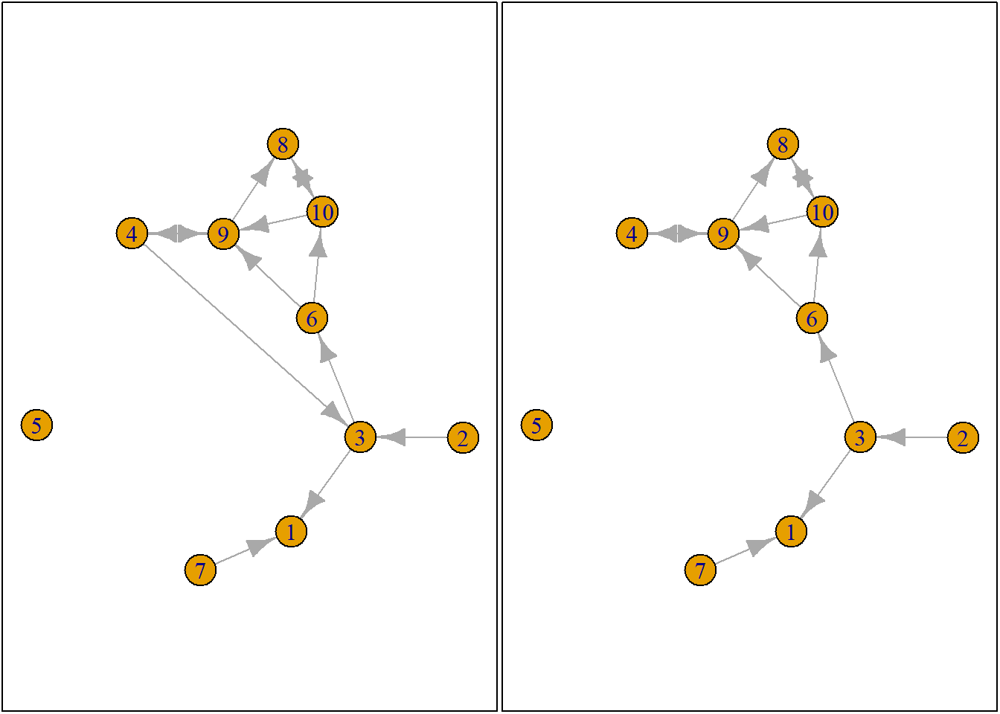
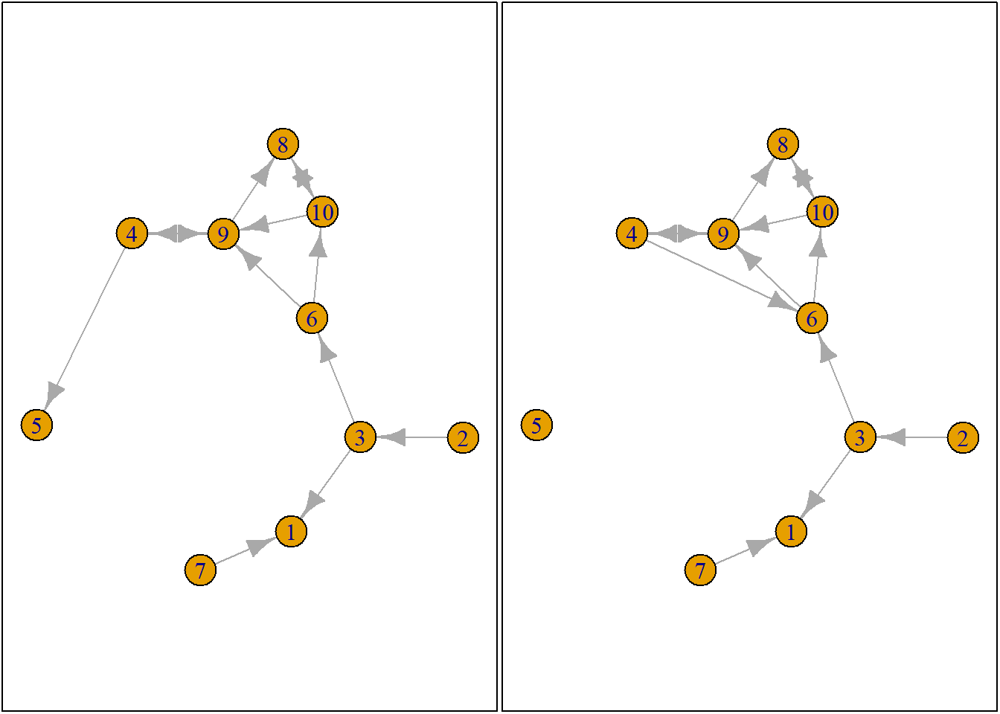
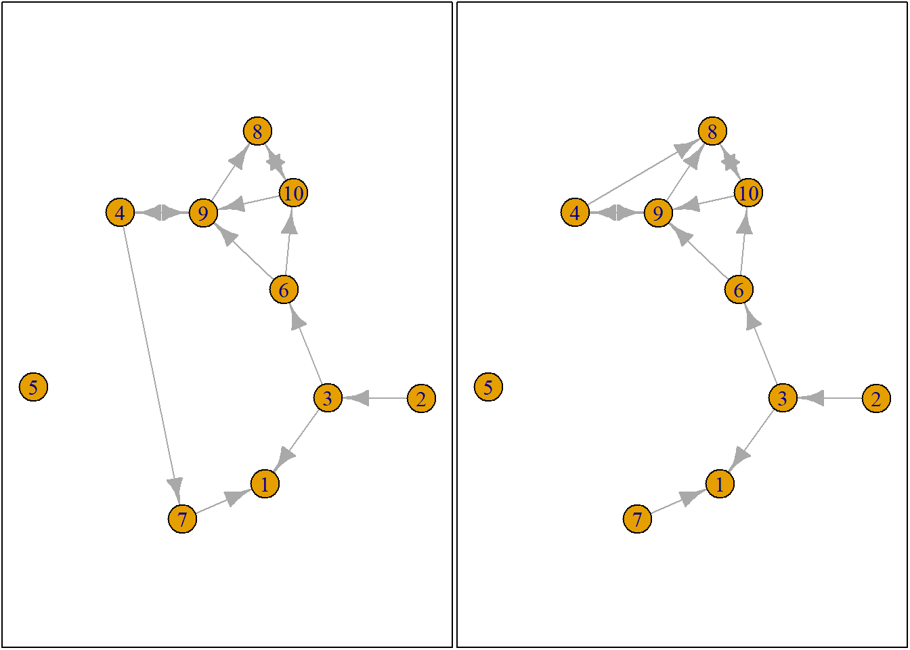
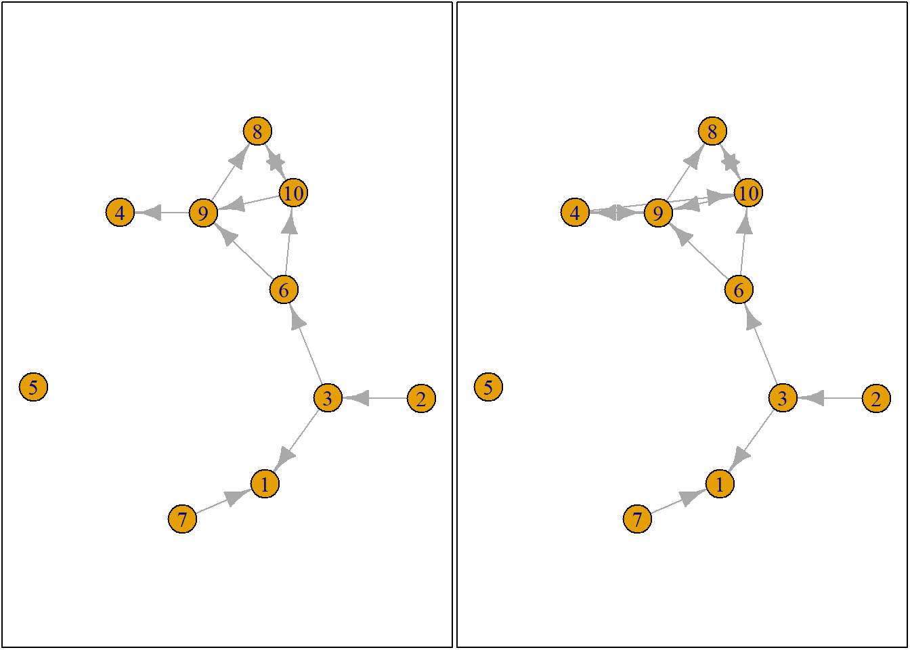
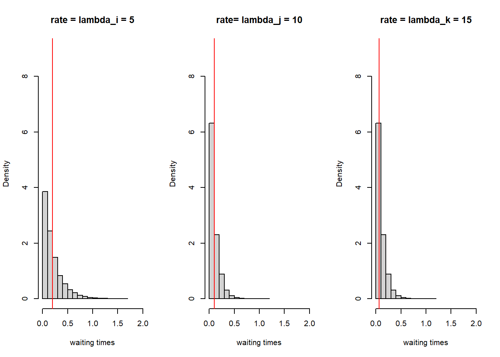
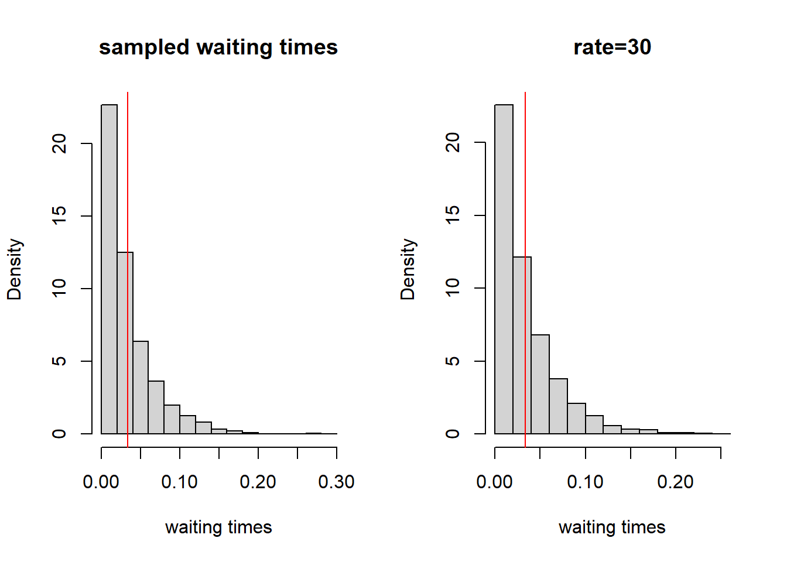
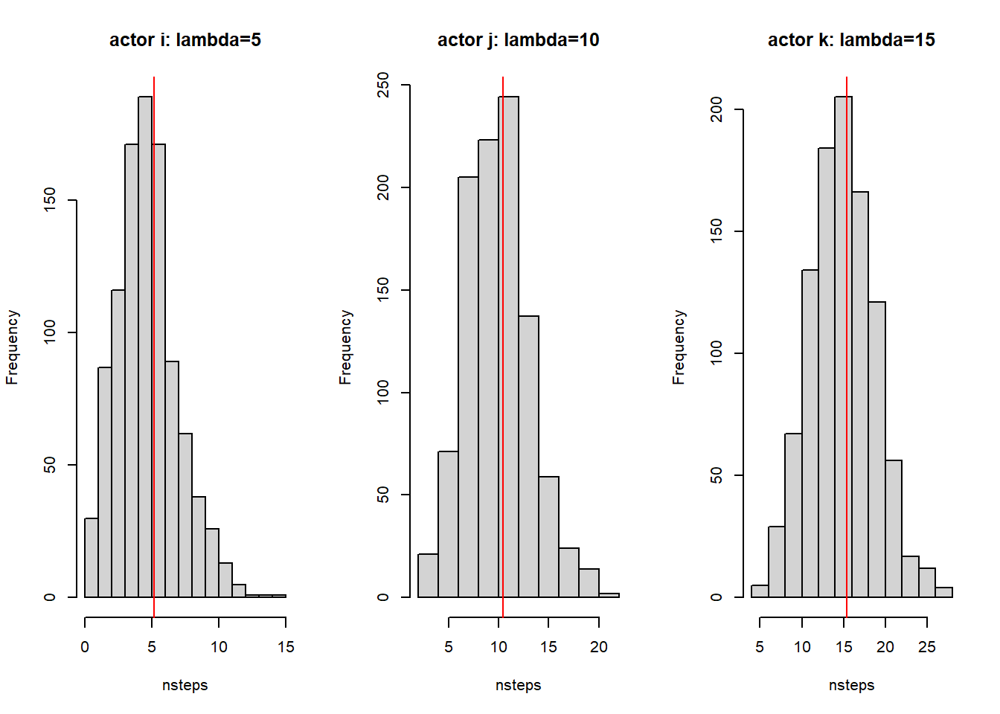

In the workshop we did the following:
This is the same as the example described in Chapter 7 of @SNASS
rm(list = ls()) # clean workspace
# custom functions
fpackage.check <- function(packages) {
lapply(packages, FUN = function(x) {
if (!require(x, character.only = TRUE)) {
install.packages(x, dependencies = TRUE)
library(x, character.only = TRUE)
}
})
} # Check if packages are installed (and install if not) in R
fsave <- function(x, file = NULL, location = "./data/processed/") {
ifelse(!dir.exists("data"), dir.create("data"), FALSE)
ifelse(!dir.exists("data"), dir.create("data"), FALSE)
if (is.null(file))
file = deparse(substitute(x))
datename <- substr(gsub("[:-]", "", Sys.time()), 1, 8)
totalname <- paste(location, datename, file, ".rda", sep = "")
save(x, file = totalname) #need to fix if file is reloaded as input name, not as x.
} # Save to processed data in repository
fload <- function(filename) {
load(filename)
get(ls()[ls() != "filename"])
} # To load the files back after an fsave
fshowdf <- function(x, ...) {
knitr::kable(x, digits = 2, "html", ...) %>%
kableExtra::kable_styling(bootstrap_options = c("striped", "hover")) %>%
kableExtra::scroll_box(width = "100%", height = "300px")
} # To print objects (tibbles / data.frame) nicely on screen in .rmd
# Packages
packages = c("RSiena", "devtools", "igraph")
fpackage.check(packages)## Loading required package: RSiena## Warning: package 'RSiena' was built under R version 4.5.3## Loading required package: devtools## Warning: package 'devtools' was built under R version 4.5.3## Loading required package: usethis## Warning: package 'usethis' was built under R version 4.5.3## Loading required package: igraph## Warning: package 'igraph' was built under R version 4.5.3##
## Attaching package: 'igraph'## The following objects are masked from 'package:stats':
##
## decompose, spectrum## The following object is masked from 'package:base':
##
## union## [[1]]
## NULL
##
## [[2]]
## NULL
##
## [[3]]
## NULL# devtools::install_github('JochemTolsma/RsienaTwoStep', build_vignettes=TRUE)
packages = c("RsienaTwoStep")
fpackage.check(packages)## Loading required package: RsienaTwoStep## Loading required package: foreach## [[1]]
## NULLts_net1## [,1] [,2] [,3] [,4] [,5] [,6] [,7] [,8] [,9] [,10]
## [1,] 0 0 0 0 0 0 0 0 0 0
## [2,] 0 0 1 0 0 0 0 0 0 0
## [3,] 1 0 0 0 0 1 0 0 0 0
## [4,] 0 0 0 0 0 0 0 0 1 0
## [5,] 0 0 0 0 0 0 0 0 0 0
## [6,] 0 0 0 0 0 0 0 0 1 1
## [7,] 1 0 0 0 0 0 0 0 0 0
## [8,] 0 0 0 0 0 0 0 0 0 1
## [9,] 0 0 0 1 0 0 0 1 0 0
## [10,] 0 0 0 0 0 0 0 1 1 0net1g <- graph_from_adjacency_matrix(ts_net1, mode = "directed")
coords <- layout_(net1g, nicely()) #let us keep the layout
par(mar = c(0.1, 0.1, 0.1, 0.1))
{
plot.igraph(net1g, layout = coords)
graphics::box()
}
set.seed(24553253)
ego <- ts_select(net = ts_net1, steps = 1) #in rsienatwostep two actors may make a change together but here not
ego## [1] 4options <- ts_alternatives_ministep(net = ts_net1, ego = ego)
# all options for future networks
plots <- lapply(options, graph_from_adjacency_matrix, mode = "directed")
par(mar = c(0, 0, 0, 0) + 0.1)
par(mfrow = c(1, 2))
fplot <- function(x) {
plot.igraph(x, layout = coords, margin = 0)
graphics::box()
}
lapply(plots, fplot)




## [[1]]
## NULL
##
## [[2]]
## NULL
##
## [[3]]
## NULL
##
## [[4]]
## NULL
##
## [[5]]
## NULL
##
## [[6]]
## NULL
##
## [[7]]
## NULL
##
## [[8]]
## NULL
##
## [[9]]
## NULL
##
## [[10]]
## NULLWhich option will ego choose? Naturally this will depend on which network characteristics (or statistics), ego finds relevant. Let us suppose that ego bases its decision solely on the number of ties it sends to others and the number of reciprocated ties it has with others
ts_degree(net = options[[1]], ego = ego) # number of ties ego sends to alters## [1] 2lapply(options, ts_degree, ego = ego) # for all options## [[1]]
## [1] 2
##
## [[2]]
## [1] 2
##
## [[3]]
## [1] 2
##
## [[4]]
## [1] 1
##
## [[5]]
## [1] 2
##
## [[6]]
## [1] 2
##
## [[7]]
## [1] 2
##
## [[8]]
## [1] 2
##
## [[9]]
## [1] 0
##
## [[10]]
## [1] 2lapply(options, ts_recip, ego = ego) # number of reciprocated ties## [[1]]
## [1] 1
##
## [[2]]
## [1] 1
##
## [[3]]
## [1] 1
##
## [[4]]
## [1] 1
##
## [[5]]
## [1] 1
##
## [[6]]
## [1] 1
##
## [[7]]
## [1] 1
##
## [[8]]
## [1] 1
##
## [[9]]
## [1] 0
##
## [[10]]
## [1] 1But what evaluation value does ego attach to these network statistics and consequently to the network (in its vicinity) as a whole? Well these are the parameters, β i , you will normally estimate with RSiena::siena07()
option <- 4
ts_degree(options[[option]], ego = ego) * -1 + ts_recip(options[[option]], ego = ego) * 1.5## [1] 0.5# or alternatively:
eval <- ts_eval(net = options[[option]], ego = ego, statistics = list(ts_degree, ts_recip), parameters = c(-1,
1.5))
eval## [1] 0.5# evaluations of all possible networks:
eval <- sapply(options, FUN = ts_eval, ego = ego, statistics = list(ts_degree, ts_recip), parameters = c(-1,
1.5))
eval## [1] -0.5 -0.5 -0.5 0.5 -0.5 -0.5 -0.5 -0.5 0.0 -0.5print("network with maximum evaluation score:")## [1] "network with maximum evaluation score:"which.max(eval)## [1] 4# so, network 4So which option will ego choose? Naturally this will be a stochastic process (= not fully deterministic, such as ‘always choose the highest evaluation score’). But we see that option 4 has the highest evaluation. We use McFadden’s choice function to calculate with random component.
# let's force ego to make a decision
choice <- sample(1:length(eval), size = 1, prob = exp(eval)/sum(exp(eval)))
print("choice:")## [1] "choice:"choice## [1] 10# print('network:') options[[choice]]Let us now simulate how the network could evolve given:
Starting point at T1 is ts_net1
Rate is set to 2
We as scientists think only the network statistics degree and reciprocity are important
RSiena::siena07 has determined the parameters for these statistics, which are -1 and 1.5 respectively
We adhere to the ministep assumption and hence set p2step to c(1,0,0)
rate <- 2
degree <- -1
recip <- 1.5
ts_sims(nsims = 1, net = ts_net1, startvalues = c(rate, degree, recip), statistics = list(ts_degree,
ts_recip), p2step = c(1, 0, 0), chain = FALSE) #not that rate parameter is automatically included. ## [1] "nsim: 1"## [[1]]
## [,1] [,2] [,3] [,4] [,5] [,6] [,7] [,8] [,9] [,10]
## [1,] 0 0 0 0 1 1 0 0 0 0
## [2,] 0 0 1 0 0 1 0 0 0 0
## [3,] 0 0 0 0 1 1 0 0 0 0
## [4,] 0 0 0 0 0 1 0 0 1 1
## [5,] 0 0 0 0 0 0 0 0 0 0
## [6,] 0 0 0 0 0 0 0 0 1 1
## [7,] 0 0 0 0 0 0 0 0 0 0
## [8,] 0 0 0 0 0 0 0 0 0 0
## [9,] 1 0 0 1 0 0 0 0 0 0
## [10,] 0 0 0 0 0 0 0 1 0 0This is the same example described in Chapter 7 of @SNASS
# [ADD THIS PART OF TUTORIAL FROM OTHER FILE]# let's assume s501 developed into s502. To estimate this network:
# ans <- ts_estim(net1 = s501, net2 = s502, statistics = list(ts_degree, ts_recip), p2step = c(1, 0, 0), conv = 0.01, phase3 = TRUE, itef3 = 50, verbose = TRUE)
# ans # final resultsThe waiting times of actors i, j and k are exponentially distributed with rate parameter λ. What do these exponential distribution look like?
par(mfrow = c(1, 3))
dist_5 <- rexp(10000, rate = 5)
hist(dist_5, main = "rate = lambda_i = 5", freq = FALSE, xlab = "waiting times", xlim = c(0, 2), ylim = c(0,
9))
abline(v = 1/5, col = "red")
dist_10 <- rexp(10000, rate = 10)
hist(dist_10, main = "rate= lambda_j = 10", freq = FALSE, xlab = "waiting times", xlim = c(0, 2), ylim = c(0,
9))
abline(v = 1/10, col = "red")
dist_15 <- rexp(10000, rate = 15)
hist(dist_10, main = "rate = lambda_k = 15", freq = FALSE, xlab = "waiting times", xlim = c(0, 2), ylim = c(0,
9))
abline(v = 1/15, col = "red")
We now want to determine who will be allowed to take the next ministep. We thus need to sample a waiting time for each actor. Thus each actor gets a waiting time sampled from the exponential distribution with the specified rate parameter:
set.seed(34641)
waitingtimes <- NA
waitingtimes[1] <- rexp(1, rate = 5)
waitingtimes[2] <- rexp(1, rate = 10)
waitingtimes[3] <- rexp(1, rate = 15)
print(paste("waitingtime_", c("i: ", "j: ", "k: "), round(waitingtimes, 3), sep = ""))## [1] "waitingtime_i: 0.264" "waitingtime_j: 0.414" "waitingtime_k: 0.028"Actor k has the shortest waiting time and is allowed to take a ministep. In the example above we only took one draw out of each exponential distribution. If we would take many draws the expected value of the waiting time is 1/λ and these values are added as vertical lines in the figure above. Thus with a higher rate parameter λ the shorter the expected waiting time.
Now let us repeat this process of determining who is allowed to take a ministep a couple of times and keep track of who will make the ministep and the time that has passed:
set.seed(245651)
sam_waitingtimes <- NA
time <- 0
for (ministeps in 1:50) {
waitingtimes <- NA
waitingtimes[1] <- rexp(1, rate = 5)
waitingtimes[2] <- rexp(1, rate = 10)
waitingtimes[3] <- rexp(1, rate = 15)
actor <- which(waitingtimes == min(waitingtimes))
time <- time + waitingtimes[actor]
sam_waitingtimes[ministeps] <- waitingtimes[actor]
print(paste("ministep nr.: ", ministeps, sep = ""))
print(paste("waitingtime_", c("i: ", "j: ", "k: ")[actor], round(waitingtimes, 3)[actor], sep = ""))
print(paste("time past: ", round(time, 3), sep = ""))
}## [1] "ministep nr.: 1"
## [1] "waitingtime_i: 0.012"
## [1] "time past: 0.012"
## [1] "ministep nr.: 2"
## [1] "waitingtime_k: 0.003"
## [1] "time past: 0.014"
## [1] "ministep nr.: 3"
## [1] "waitingtime_k: 0.013"
## [1] "time past: 0.027"
## [1] "ministep nr.: 4"
## [1] "waitingtime_i: 0"
## [1] "time past: 0.027"
## [1] "ministep nr.: 5"
## [1] "waitingtime_j: 0.052"
## [1] "time past: 0.08"
## [1] "ministep nr.: 6"
## [1] "waitingtime_j: 0.073"
## [1] "time past: 0.153"
## [1] "ministep nr.: 7"
## [1] "waitingtime_k: 0.054"
## [1] "time past: 0.207"
## [1] "ministep nr.: 8"
## [1] "waitingtime_i: 0.016"
## [1] "time past: 0.223"
## [1] "ministep nr.: 9"
## [1] "waitingtime_k: 0.006"
## [1] "time past: 0.229"
## [1] "ministep nr.: 10"
## [1] "waitingtime_k: 0.019"
## [1] "time past: 0.248"
## [1] "ministep nr.: 11"
## [1] "waitingtime_k: 0.044"
## [1] "time past: 0.292"
## [1] "ministep nr.: 12"
## [1] "waitingtime_k: 0.024"
## [1] "time past: 0.316"
## [1] "ministep nr.: 13"
## [1] "waitingtime_i: 0.022"
## [1] "time past: 0.338"
## [1] "ministep nr.: 14"
## [1] "waitingtime_k: 0.038"
## [1] "time past: 0.376"
## [1] "ministep nr.: 15"
## [1] "waitingtime_i: 0.027"
## [1] "time past: 0.403"
## [1] "ministep nr.: 16"
## [1] "waitingtime_k: 0.002"
## [1] "time past: 0.405"
## [1] "ministep nr.: 17"
## [1] "waitingtime_i: 0.045"
## [1] "time past: 0.45"
## [1] "ministep nr.: 18"
## [1] "waitingtime_k: 0.023"
## [1] "time past: 0.473"
## [1] "ministep nr.: 19"
## [1] "waitingtime_i: 0"
## [1] "time past: 0.474"
## [1] "ministep nr.: 20"
## [1] "waitingtime_i: 0.024"
## [1] "time past: 0.498"
## [1] "ministep nr.: 21"
## [1] "waitingtime_k: 0.013"
## [1] "time past: 0.511"
## [1] "ministep nr.: 22"
## [1] "waitingtime_j: 0.018"
## [1] "time past: 0.529"
## [1] "ministep nr.: 23"
## [1] "waitingtime_j: 0.027"
## [1] "time past: 0.556"
## [1] "ministep nr.: 24"
## [1] "waitingtime_j: 0.061"
## [1] "time past: 0.617"
## [1] "ministep nr.: 25"
## [1] "waitingtime_k: 0.018"
## [1] "time past: 0.635"
## [1] "ministep nr.: 26"
## [1] "waitingtime_j: 0.097"
## [1] "time past: 0.732"
## [1] "ministep nr.: 27"
## [1] "waitingtime_j: 0.007"
## [1] "time past: 0.739"
## [1] "ministep nr.: 28"
## [1] "waitingtime_j: 0.009"
## [1] "time past: 0.748"
## [1] "ministep nr.: 29"
## [1] "waitingtime_k: 0.001"
## [1] "time past: 0.75"
## [1] "ministep nr.: 30"
## [1] "waitingtime_j: 0.009"
## [1] "time past: 0.759"
## [1] "ministep nr.: 31"
## [1] "waitingtime_i: 0.012"
## [1] "time past: 0.77"
## [1] "ministep nr.: 32"
## [1] "waitingtime_i: 0.056"
## [1] "time past: 0.826"
## [1] "ministep nr.: 33"
## [1] "waitingtime_k: 0.031"
## [1] "time past: 0.857"
## [1] "ministep nr.: 34"
## [1] "waitingtime_j: 0.051"
## [1] "time past: 0.908"
## [1] "ministep nr.: 35"
## [1] "waitingtime_k: 0.014"
## [1] "time past: 0.923"
## [1] "ministep nr.: 36"
## [1] "waitingtime_j: 0.021"
## [1] "time past: 0.943"
## [1] "ministep nr.: 37"
## [1] "waitingtime_k: 0.021"
## [1] "time past: 0.965"
## [1] "ministep nr.: 38"
## [1] "waitingtime_k: 0.059"
## [1] "time past: 1.024"
## [1] "ministep nr.: 39"
## [1] "waitingtime_k: 0.029"
## [1] "time past: 1.053"
## [1] "ministep nr.: 40"
## [1] "waitingtime_j: 0.013"
## [1] "time past: 1.065"
## [1] "ministep nr.: 41"
## [1] "waitingtime_j: 0.044"
## [1] "time past: 1.11"
## [1] "ministep nr.: 42"
## [1] "waitingtime_k: 0.069"
## [1] "time past: 1.178"
## [1] "ministep nr.: 43"
## [1] "waitingtime_i: 0.066"
## [1] "time past: 1.244"
## [1] "ministep nr.: 44"
## [1] "waitingtime_j: 0.003"
## [1] "time past: 1.248"
## [1] "ministep nr.: 45"
## [1] "waitingtime_j: 0.01"
## [1] "time past: 1.258"
## [1] "ministep nr.: 46"
## [1] "waitingtime_k: 0.086"
## [1] "time past: 1.343"
## [1] "ministep nr.: 47"
## [1] "waitingtime_k: 0.046"
## [1] "time past: 1.389"
## [1] "ministep nr.: 48"
## [1] "waitingtime_k: 0.031"
## [1] "time past: 1.42"
## [1] "ministep nr.: 49"
## [1] "waitingtime_i: 0.007"
## [1] "time past: 1.427"
## [1] "ministep nr.: 50"
## [1] "waitingtime_j: 0.066"
## [1] "time past: 1.493"Sample some more waiting times and plot the distribution:
set.seed(245651)
sam_waitingtimes <- NA
for (ministeps in 1:5000) {
waitingtimes <- NA
waitingtimes[1] <- rexp(1, rate = 5)
waitingtimes[2] <- rexp(1, rate = 10)
waitingtimes[3] <- rexp(1, rate = 15)
actor <- which(waitingtimes == min(waitingtimes))
sam_waitingtimes[ministeps] <- waitingtimes[actor]
}
par(mfrow = c(1, 2))
hist(sam_waitingtimes, freq = FALSE, xlab = "waiting times", main = "sampled waiting times")
abline(v = mean(sam_waitingtimes), col = "red")
hist(rexp(5000, rate = 30), freq = FALSE, xlab = "waiting times", main = "rate=30")
abline(v = 1/30, col = "red")
The larger the rate parameter the more opportunities for change there are within a given time period. So how many opportunities for change do we have before the total time exceeds 1? Please have a look above with the example of actors i, j and k with rate parameters of 5, 10 and 15 respectively. We see that after ministep 38 time exceeds 1. Of course this was only one run. We could repeat the simulation a couple of times and keep track of the total ministeps and the ministeps for each actor. Let us plot the number of ministeps for actors i, j and k for 1000 simulations.
set.seed(245651)
results <- list()
for (nsim in 1:1000) {
time <- 0
steps_tot <- 0
steps_i <- 0
steps_j <- 0
steps_k <- 0
actors <- NA
while (time < 1) {
steps_tot <- steps_tot + 1
waitingtimes <- NA
waitingtimes[1] <- rexp(1, rate = 5)
waitingtimes[2] <- rexp(1, rate = 10)
waitingtimes[3] <- rexp(1, rate = 15)
actor <- which(waitingtimes == min(waitingtimes))
time <- time + waitingtimes[actor]
actors[steps_tot] <- actor
}
results[[nsim]] <- actors
}
# sum(results[[1]]==1) hist(sapply(results, length))
par(mfrow = c(1, 3))
{
hist(sapply(results, function(x) {
sum(x == 1)
}), xlab = "nsteps", main = "actor i: lambda=5")
abline(v = mean(sapply(results, function(x) {
sum(x == 1)
})), col = "red")
}
{
hist(sapply(results, function(x) {
sum(x == 2)
}), xlab = "nsteps", main = "actor j: lambda=10")
abline(v = mean(sapply(results, function(x) {
sum(x == 2)
})), col = "red")
}
{
hist(sapply(results, function(x) {
sum(x == 3)
}), xlab = "nsteps", main = "actor k: lambda=15")
abline(v = mean(sapply(results, function(x) {
sum(x == 3)
})), col = "red")
}
So, actor k has the highest rate parameter = shortest waiting time = highest probability for an opportunity of change.